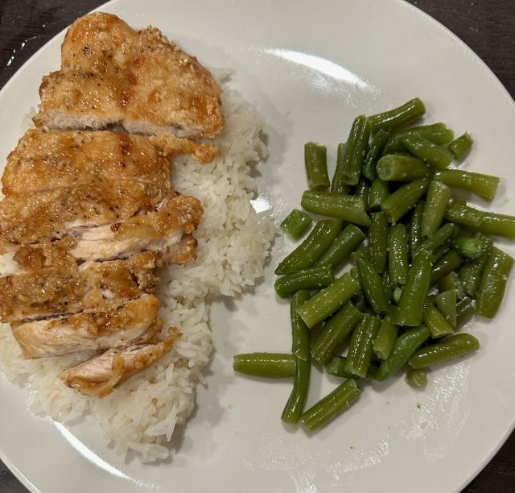

Description:
I learned recently that some Asian style cusine uses corn starch to fry their chicken.
Learning this I decided to experiment and the result was a really wonderful lightly fried chicken.
I use a good bit of spices and maybe pick up some bang bang sauce if I am in the mood.
I hope you guys enjoy this dish as much as I enjoy making it!
Ingredients:
- Olive Oil
- 1 tbsp Salt
- 1 tbsp Black Pepper
- 1 tbsp Adobo
- 1 tbsp Garlic Powder
- Bang Bang Sauce(If you want)
- Corn Starch
- Cast Iron Skillet
- Vegetable Oil
Steps:
- Coat chicken in oil and then corn starch
- Fill your Cast Iron Skillet with oil until the Chicken would be covered
- Heat Skillet to medium high heat
- Mix seasonings into a bowl and season chicken
- Place Chicken in skillet
- Cook 3 minutes then flip
- Once done sit out on paper towel
- Add bang bang sauce if you would like
- Eat and enjoy!